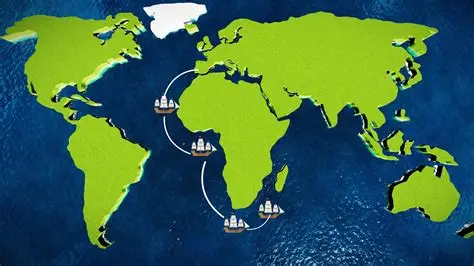

Bartolomeu Dias
Il primo europeo a doppiare il Capo di Buona Speranza

~1450 - 1500 | Esploratore portoghese che aprì la rotta verso l'Oceano Indiano
I Numeri dell'Impresa
🌊 Il Grande Viaggio (1487-1488)
🚢 La Partenza dal Portogallo
Bartolomeu Dias partì con una piccola flotta e una nave che portava i viveri. L'obiettivo era esplorare le coste africane sempre più a sud, in un periodo in cui il Portogallo cercava nuove rotte verso l'Oriente.
Perché il Portogallo cercava nuove rotte?
- Commercio delle spezie: evitare gli intermediari arabi e veneziani
- Competizione europea: Spagna e Portogallo in gara per le scoperte
- Tecnologia navale: caravelle più veloci e manovrabili
Fonte: Treccani - Enciclopedia Italiana
⛈️ Le Tempeste e la Scoperta
Durante il viaggio affrontò tempeste molto violente che lo spinsero lontano dalla costa. Quando tornò verso terra, si rese conto di aver superato il punto più a sud del continente africano: aveva raggiunto il Capo di Buona Speranza.
Inizialmente chiamò quel luogo "Capo delle Tempeste" per le difficoltà incontrate. Fu il re del Portogallo a rinominarlo "Capo di Buona Speranza", simbolo di ottimismo per la nuova rotta aperta verso l'Asia.
🗺️ La Mappa dei Venti e delle Correnti
Durante il suo viaggio tracciò una mappa dei venti e delle correnti marine, che dieci anni dopo fu molto utile a Vasco da Gama per completare la rotta verso l'India.
Questa mappa era fondamentale perché permetteva ai navigatori di sfruttare i venti favorevoli e evitare quelli contrari, riducendo i tempi e i rischi della navigazione oceanica.
🗺️ La Rotta Scoperta

Come fu scoperta la nuova possibilità di navigazione?
La scoperta di Bartolomeu Dias dimostrò che l'Oceano Atlantico e l'Oceano Indiano erano collegati, rendendo possibile una rotta marittima verso l'Asia. Anche se non arrivò fino in India, il suo viaggio preparò la strada a Vasco da Gama, che qualche anno dopo completò l'impresa.
La nuova possibilità di navigazione consiste in: la possibilità di raggiungere l'Asia via mare, doppiando l'Africa, senza dover passare per le rotte terrestri controllate da intermediari.
Curiosità
- Chiamò il Capo di Buona Speranza "Capo delle Tempeste" per le difficoltà incontrate
- La sua mappa dei venti fu essenziale per il successo di Vasco da Gama
- Morì nel 1500 proprio vicino al Capo che aveva scoperto, durante un viaggio verso l'India
Re Giovanni II del Portogallo: Sostenitore delle esplorazioni, rinominò il "Capo delle Tempeste" in "Capo di Buona Speranza".
Vasco da Gama: Completò l'impresa di Dias raggiungendo l'India nel 1498, usando la mappa tracciata da Bartolomeu.
Il merito principale di Bartolomeu Dias fu aver aperto una nuova possibilità di navigazione: collegare Atlantico e Indiano via mare. Questo cambiò per sempre le esplorazioni e il commercio tra Europa e Oriente, favorendo l'ascesa del Portogallo come potenza globale.
📖 Ripassa Prima del Quiz!
Leggi attentamente queste informazioni e prova a rispondere alle domande
👤 Chi era Bartolomeu Dias?
📍 Domanda 1: Quando e dove nacque?
Risposta: Bartolomeu Dias nacque intorno al 1450 in Portogallo.
📍 Domanda 2: Che famiglia aveva?
Risposta: Era membro di una famiglia legata alla corte reale e alla navigazione.
📍 Domanda 3: In che contesto storico operava?
Risposta: Operava in un periodo in cui il Portogallo cercava nuove rotte verso l'Oriente per il commercio delle spezie.
📍 Domanda 4: Quando e dove morì?
Risposta: Morì nel 1500 durante un viaggio verso l'India, vicino al Capo di Buona Speranza.
🚢 Il Viaggio Storico
📍 Domanda 5: Quando partì e con quale obiettivo?
Risposta: Partì nel 1487 dal Portogallo con una piccola flotta. Obiettivo: esplorare le coste africane sempre più a sud.
📍 Domanda 6: Cosa accadde durante il viaggio?
Risposta: Affrontò tempeste molto violente che lo spinsero lontano dalla costa.
📍 Domanda 7: Quando raggiunse il Capo di Buona Speranza?
Risposta: Nel 1488.
📍 Domanda 8: Perché lo chiamò "Capo delle Tempeste"?
Risposta: Per le difficoltà incontrate durante le violente tempeste.
📍 Domanda 9: Chi rinominò il capo e perché?
Risposta: Il re del Portogallo lo rinominò "Capo di Buona Speranza" come simbolo di ottimismo.
🗺️ La Mappa dei Venti e delle Correnti
📍 Domanda 10: Cosa tracciò durante il viaggio?
Risposta: Una mappa dei venti e delle correnti marine.
📍 Domanda 11: A chi fu utile questa mappa?
Risposta: A Vasco da Gama dieci anni dopo.
📍 Domanda 12: Perché questa scoperta fu fondamentale?
Risposta: Dimostrò che Atlantico e Indiano erano collegati.
📍 Domanda 13: In cosa consiste la nuova possibilità di navigazione?
Risposta: Raggiungere l'Asia via mare doppiando l'Africa senza intermediari.
📚 Fonti Consultate
- Treccani - Enciclopedia Italiana
- Focus Junior - Spiegazioni per ragazzi
- Geopop - Approfondimenti scientifici
- Libro di storia - Contesto storico